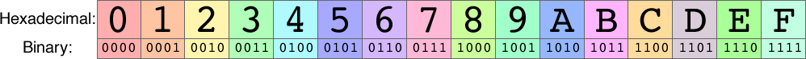
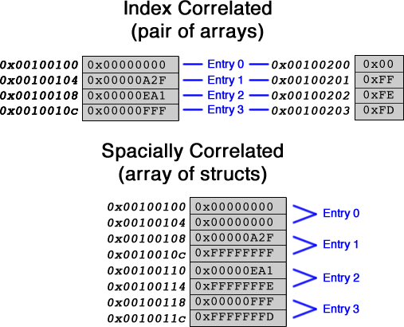

Hexadecimal and Tables
Information
Hexadecimal
The hexadecimal numbering system (base 16) is used commonly in computing science, due to its easy translation to and from binary. Compared to binary, hexadecimal is extremely succinct, representing 4 binary digits with a single hexadecimal digit. Hexadecimal, unlike decimal, can be translated to binary digit by digit, with digits not affecting each other in the binary result.

Due to this direct correlation, the algorithm to create a binary number from ASCII hexadecimal digits to a binary integer only involves converting the ASCII digit to the value it represents, and shifting left 4 before oring in the next hexadecimal digit.
Going from a binary number to ASCII hexadecimal is similarly simple, involving masking out each 4-bit section and converting it to its associated ASCII character. A full table of ASCII characters can be found here.
Tables
A table in assembly is simply a known amount of allocated space with a known base address. Depending on how many fields need to be in the table, fields in the same row can be stored in the same table or each field may be stored in a separate table while all the fields corresponding to the same entry share an index value. As a rule, in large tables with fields of differing alignments, for instance a word field and a byte field, it is more efficient to use two index-correlated tables than to allocate extra space or deal with unaligned word issues. If the alignments of all of the entries match, it is more efficient to use a spacially-correlated table.

Assignment
Your job is to implement the following 3 functions:
- readHex :
- Parameter: $a0 contains the memory address of the first character of a string of 8 ASCII characters. This string contains the ASCII hexadecimal representation of an unsigned integer. The string is not null terminated.
- Return values:
- $v1 = 1 to indicate that a character other than 0-9, a-f, or A-F was encountered in the string. The value returned in $v0 is irrelevant.
- $v1 = 0 to indicate that the string was a valid ASCII hexadecimal representation of an unsigned integer. Return in $v0 the integer value.
- Example:
If ReadHex finds that the string at the address in $a0 is "ABcd1234" then the return values should be (expressed in binary):
- $v1 = 0000 0000 0000 0000 0000 0000 0000 0000
- $v0 = 1010 1011 1100 1101 0001 0010 0011 0100
- printHex:
- Parameter: $a0 contains an unsigned integer value
- Output: Prints the hexadecimal representation, including the leading 0x, of the integer value using lowercase letters for the hexadecimal code, for example 0x1234abcd. printHex uses system calls to print. printHex must print 8 hex characters independent of the integer value. Do not print a newline after printing the number.
- Return values: None
- Example: If $a0 = 1010 1011 1100 1101 0001 0010 0011 0100 (expressed in binary), then printHex should print the string:
0xabcd1234
- createCountTable:
- Execution: This function must create a table for use with countIntegerAccess. It will be called only once, at the start of execution, and will create a table with enough room to track access counts for up to 200 arbitrary integers. The integers are unknown until they are passed as argument to countIntegerAccess, thus you will need a table capable of associating an arbitrary integer value with another value. You may choose how you implement this. No single integer will be accessed more than 255 times, thus a single byte is sufficient to store the counts. This function is part of the assignment just in case your design requires such a function for allocation of memory space for the table and initialization of variables. In some designs, createCountTable may do nothing. In that case it still should appear in your code, but it will simply have a jr $ra instruction.
- You can either allocate memory using the .data directive or else you may use the sbrk syscall to allocate memory dynamically. Either way, you can use a .data section in your subroutine to communicate the address of the table to the other subroutines: the other subroutines will access an address with a known label in this .data section to find the start address for the table.
- countIntegerAccess:
- Parameter: $a0 is an arbitrary integer value
- Return values: $v0 is the number of times the particular value passed as argument has been accessed (including the one that occurs because of this invocation of countIntergerAccess).
- Execution: countIntegerAccess must first search the count table to find out if this integer has already been accessed at least once. If so, the associated count must be incremented and returned. If not, the integer passed as argument must be added to the table, and its associated count initialized to 1 and returned.
To assist you in the creation and testing of these functions, a MIPS testing file test.s has been created for you. This testing file creates a simple interactive terminal which allows you to enter a hexadecimal number, uses readHex to convert it to an unsigned integer, countAccess to count the times that integer has been entered, and printHex to print the integer back in hexadecimal. This will allow you to ensure correctness across all your functions. When marking, values will be provided directly to each function, so ensure that your functions do not rely on previous execution of each other. During marking, no guarantees about input are provided beyond those indicated in the specifications for each function.
Notes
- When allocating space to store lists of words, ensure you use .align 2 to align the space to a word boundary.
- Ensure that all data storage is placed in .data, and all code is placed in .text
- Ensure that you only submit the functions in the spec above, and do not include test.s or a main function
Resources
- Slides used for in-class introduction of the lab (.pptx) (.pdf)
- Slides used for in-lab introduction of the lab (.pdf)
Marking Guide
Assignments too short to be adequately judged for code quality will be given a zero.
- 20% For code cleanliness, readability, and comments
- 30% for correct implementation of countAccess
- 25% for correct implementation of readHex
- 25% for correct implementation of printHex
- Here is the mark sheet used for grading
Submission
There is a single file to be submitted for this lab. The file name should be lab2.s and it should contain only the code for the functions specified above. Make sure to not include a main function in your solution. Use the link provided in the course page for submission.